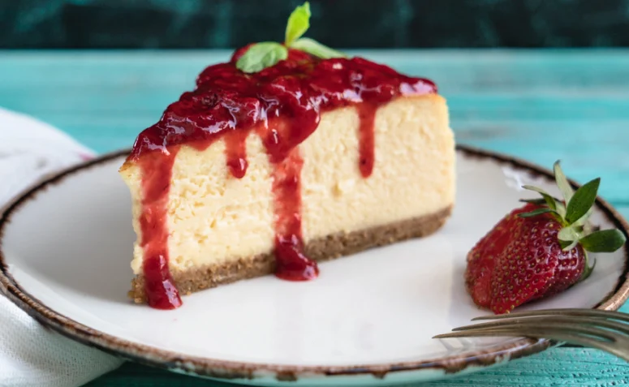

Cheesecake

Description
A cheesecake is a creamy, rich dessert that is typically made with a crust made of graham crackers or cookies, and filling made of cream cheese, eggs and sugar. It is often topped with fruit, chocolate, or caramel sauce. The texture of a cheesecake is smooth and velvety, and it has a slightly tangy flavor due to the cream cheese.
Cheesecakes can be baked or made with a no-bake filling that is chilled until set. They are often served chilled, and can be sliced and served as a pie or cut into individual servings.
This desert is popular for special occasions, and there are many variations, including flavors such as chocolate, pumpkin and lemon.
Ingredients
- 2 cups graham cracker crumbs
- 1/2 cup butter, melted
- 4 8-ounce packages of cream cheese, softened
- 1 cup granulated sugar
- 4 large eggs
- 1 cup sour cream
- 2 tbsp all-purpose flour
- 1 tsp vanilla extract
- 1 cup of your choice of red fruit (such as strawberries, raspberries or cherries), pureed
- Red fruits as toppings
Steps
- Preheat your oven to 350°F (180°C).
- In a medium bowl, mix the graham cracker crumbs and melted butter until well combined. Press the mixture into the bottom of a 9-inch springform pan.
- In a large bowl, beat the cream cheese and sugar together until smooth. Beat in the eggs, one at a time, until well combined.
- Stir in the sour cream, flour, and vanilla extract until smooth. Add the pureed red fruit and mix until well combined. Pour the mixture over the graham cracker crust.
- Bake the cheesecake for 45-55 minutes, or until the center is almost set.
- Remove the cheesecake from the oven and allow it to cool to room temperature. Then, refrigerate it for at least 4 hours, or until it is completely chilled.
- Once the cheesecake is chilled, you can serve it as is, or top it with additional red fruit. Enjoy!